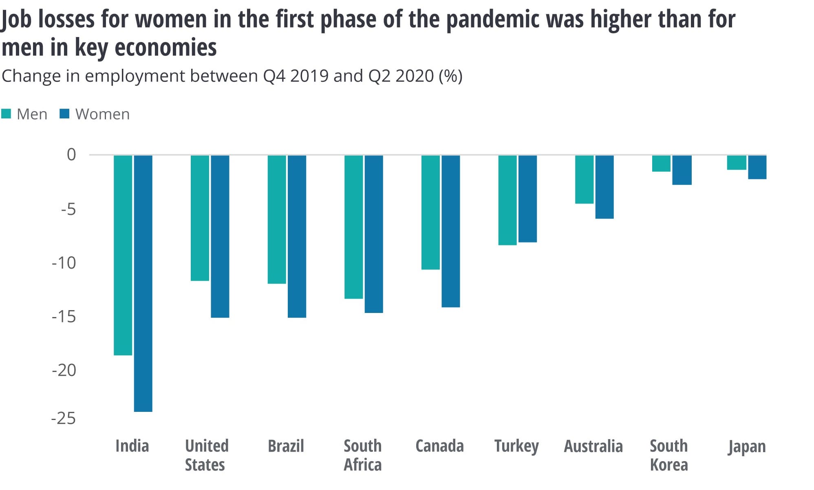

The first chart looks at to what extent do the people in United Kingdom approve of the government's record between 2020 and 2022.
The second chart compares which issue (Health or Economy) the Britons think is the most important issue faced by their country between 2020 and 2022.
The two charts above were embedded from the rapid charts repository.
This chart shows a chart of IMF Lending Outstanding in Nominal terms.
This chart uses GDP data from each year to show the IMF Lending Outstanding.
Having adjusted the data to show credit outstanding as a percentage of global GDP, 1984 can be seen as the riskiest year due to its highest proportion of IMF lending to global GDP.
The data are derived as average hours worked multiplied by the corresponding and consistent measure of employment.
This bar chart uses the same data as the previous chart, however, it is presented as a line chart.
I chose to modify it to a line chart instead of a bar chart as the data is a time series and therefore has a large numer of data points.
This chart shows the type and amount of medals received by the countries below during the Olympic Games in 2020.
The link to the colab where I conducted the data analysis can be seen here.
I chose this website because the data did not require much cleaning and I was able to obtain the table directly from the url using Python.
This chart shows the unemployment rate in the United Kingdom.
I conducted the analysis using python in Google Colab.
The cholorpleth map above shows the North-East region of Germany appears to spend the least on health relative to other regions. This is largely due to the lower population density in this area. In contrast, the region of 'Nordrhein-Westfalen' spends markedly more than any other region, due to higher levels of public and private expenditure.
At the Festival of Economics, it was argued that the pandemic has impacted more women's mental health than men.
From the chart below, we know that the pandemic’s impact on women's employment is bigger than men.
Contextualising the graphs above, I argee with the statement made by professor's Sarah Smith. Women have been more impacted mentally than men during the pandemic due to a number of factors, one of them being losing their source of income.
The scatter plot graph below determines whether air emissions has a correlation with the population.
For this graph, I used a bubble graph to show the relationship between education and climate change.
I chose scatter plot graph and bubble graph as this week we were told to produce two charts that use advanced analytics.
Hypothesis - The level of education in a given US state is linked to the average life expectancy at birth in years. Analysis used to create regression can be seen here.
From the graph above, we know that when the correlation is positive, the regression slope will be positive.